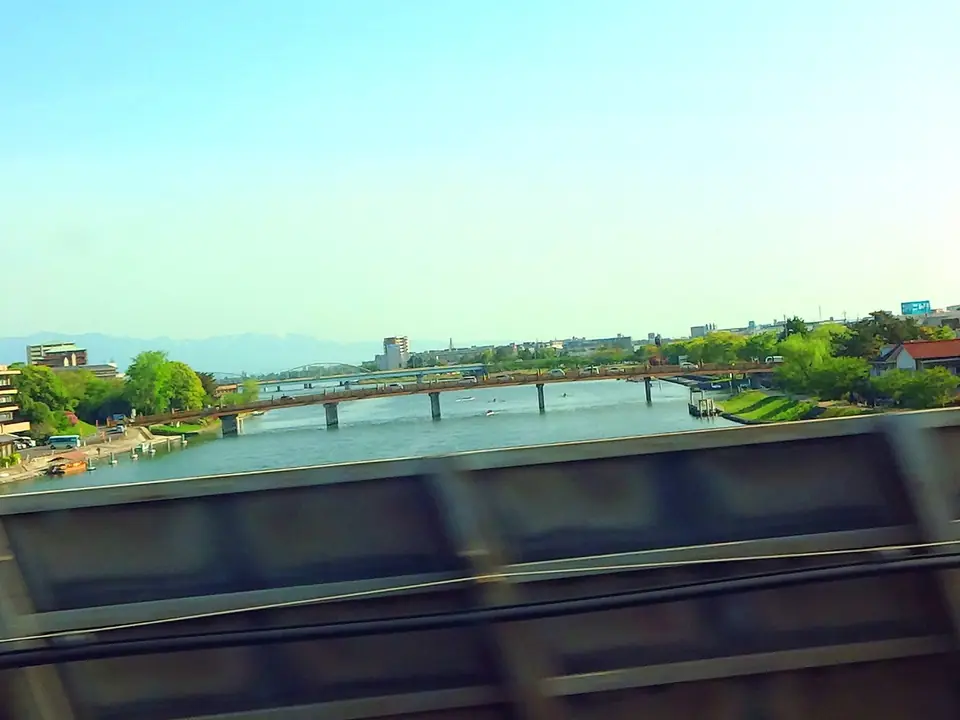

TOKAIDO SHINKANSEN WINDOW VIEW
When can you see Seta no Karahashi Bridge from the Shinkansen?
A bridge before Kyoto.

- Section
- Maibara → Kyoto
- Seat side
- Seat E · mountain side
- Timing
- About 127 minutes after leaving Tokyo on a Nozomi train
- Photos
- 3 photos
How to find Seta no Karahashi Bridge
A little before Kyoto, Seat E may open onto the Seta River and Seta no Karahashi Bridge. It is an old strategic crossing, even appearing in early Japanese chronicles, and is linked to the idea behind the proverb 'more haste, less speed.' It passes quickly, just before Kyoto.
More: @letus10: Seta no Karahashi window article (Japanese only)
If you are traveling from Tokyo toward Shin-Osaka, start watching the Seat E · mountain side window as you approach Maibara → Kyoto. If you are traveling toward Tokyo, the order is reversed.
Location at a glance
Open mapSwitch between the spot and the Shinkansen viewpoint.
How to catch Seta no Karahashi Bridge
1. Choose the window first
As you approach Maibara → Kyoto, start watching from Seat E · mountain side. Use Live Guide while riding, or the map on this page before you board.
The view lasts about 45 seconds. It is short, but easy enough to catch if you start watching before the train reaches it.
2. What makes it worth watching
Water views are satisfying because the scenery suddenly opens up after dense urban sections. The surface can make the change noticeable even on cloudy days.
3. Confidence and references
This spot is guided from references and photos. When riding, give yourself a little margin before and after the listed timing.
Seta no Karahashi Bridge in photos


 Related
Kannonji Castle Ruins
Related
Kannonji Castle Ruins
 Related
Sawayama Castle Ruins
Related
Sawayama Castle Ruins
 Related
Torikai Train Depot
Related
Torikai Train Depot